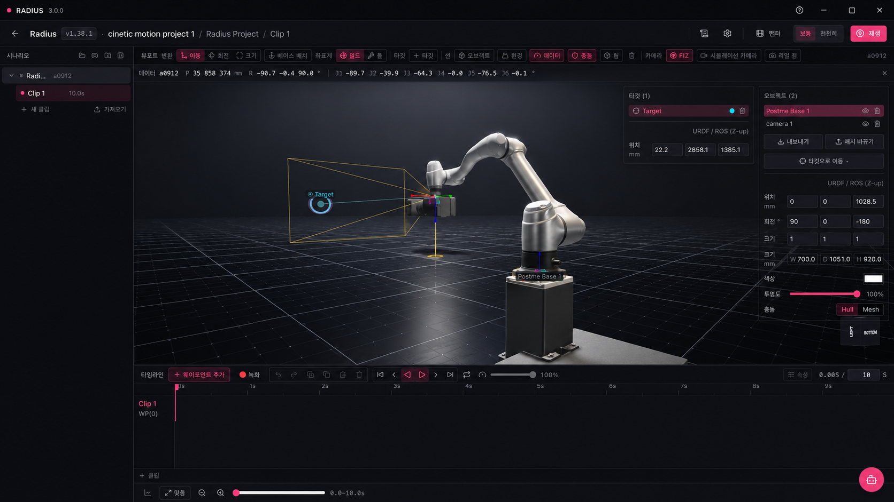
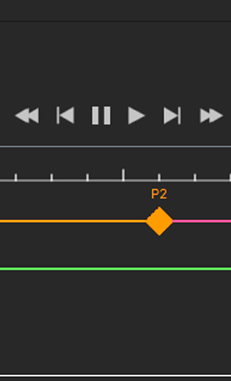

The powerful RADIUS-based timeline controls go hand in hand with video professionals' intuition.

Familiar interface and architecture with contemporary editing and animation tools, such as keyframes, clips, timelines, and projects, to connect most intuitively between virtual (software) and reality (hardware).

KEY FEATURES

ROBOT SIMULATOR
Virtual environment to ensure real-world behavior in a simulation.

INTUITIVE CONTROL
In addition to the traditional shooting grammar such as Boom/Track/Dutchroll/Pan/Tilt, you can implement a completely new and free camera motion.

TIMELINE CONTROL
Easily operate the robot with keyframes and timelines similar to imaging tools.

DETAILED ADJUSTMENTS
Detailed adjustment of motion and keyframe is possible for delicate camera work.

PROJECT MANAGEMENT
Organize complex keyframes and projects efficiently.

LIVE MONITORING
Live monitoring for accurate behavior provides an efficient working environment.